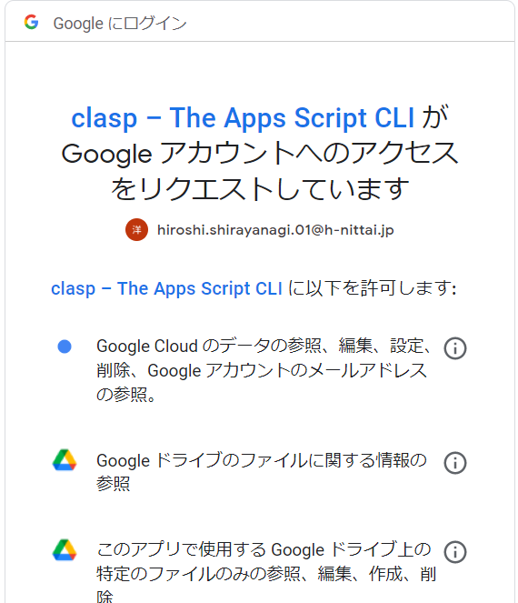
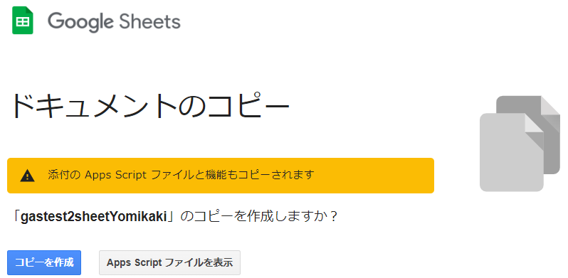
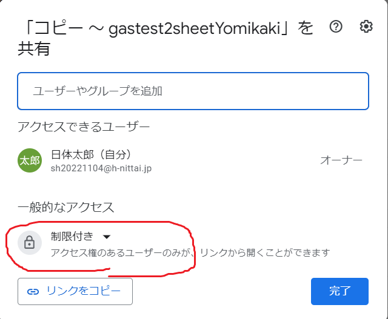
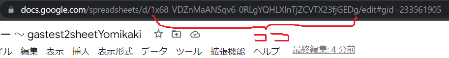

書いた日：2023/01/29, 書いた人:shirayanagi hiroshi
ipadで時間割を入力、閲覧することができる仕組みについて説明する。
これはwebサービスである。学級毎に決められたURLにブラウザでアクセスすることで時間割を見られる。ipadでの利用を想定しデザインしているが、PCやスマートフォンからもアクセスはできる。
機能を提供する側も閲覧する側もGoogle Workspaceのアカウントが必要であり、学校から割り振られているものを使う。担任がwebサービスを用意し、学級の生徒がそれを利用するイメージである。
教育機関はWorkspaceを無料で利用できるというのに乗っかってこれを作ったが、Google App Script(以下GAS)には1日の処理回数の制限があり、あまり大きなシステムを作るものではないっぽいというのと、ユーザ操作の簡素化の観点から、とりあえず学級単位での実施とする。
生徒が入力したデータは担任の先生のGoogle Driveのスプレッドシートに入力される。(これをデータベース代わりに使っている。)生徒が上書きや削除をすると、以前の内容が見られなくなることはあるが、データとしては削除しない。先生がスプレッドシートを見れば誰が何を書いたのかを辿れる。
機能としてはGoogle Driveにスプレッドシートを用意し、GASを動かすだけであるが、ソースコードの管理にgit、claspを使う。claspはnode.jsのパッケージであるため、まずはgitとnode.jsをインストールする。(インストーラをダウンロードし実行する。手順は割愛。)
https://script.google.com/home/usersettingsからGoogle Apps Script APIをオンにする。(初期値はオフ)
コマンドプロンプトで以下を実行する。
手順1:claspのインストール
npm install @google/clasp -g
手順2:適当なフォルダを作成し、そこへ移動する
mkdir ipadjikanwari
cd ipadjikanwari
手順3:claspのログイン
clasp login
自動的にブラウザが起動し学校支給のアカウントでログインすると、下のようなダイアログが表示されるので、ダイアログ下部の許可ボタンを押す。

成功すれば、ブラウザには「Logged in! You may close this page. 」とコマンドプロンプトには「Authorization successful.Default credentials saved to:...」と表示される。
手順4:webapp(時間割)のプロジェクトの作成
clasp create ipadjikanwari
そのあと、どの種類のプロジェクトを作るのかの選択が表示されるので、webappを選ぶ。
ここで、.clasp.jsonとappsscript.jsonが生成されているはずだが、のちの手順の邪魔になるので、appsscript.jsonのみ削除する。
手順5:gitでソースファイルを取得する
git init
git remote add origin https://github.com/shirayanagihiroshi/ipadjikanwari.git
git pull origin master --allow-unrelated-histories
手順6:スプレッドシートを準備
メールでスプレッドシートを受け取る。(送る人は送りたいスプレッドシートを開いて、URLをコピーする。例：「https://docs.google.com/spreadsheets/d/1x68-VDZnMaANSqv6-0RLgYQHLXInTjZCVTX23fjGEDg/edit#gid=233561905」この中のeditをcopyに変更し、メール本文にはりつけて送ると、受け取った人は下記のような画面が表示される。コピーを作成ボタンを押すことで該当ファイルがドライブにコピーされる。

これを開いて、画面右上の共有ボタンを押し、下記の一般的なアクセスを「制限付き」から「〇〇学校」に変更し、さらに役割を「閲覧者」から「編集者」に変更する。また、jikanwariシートの時間割を実際のものに修正する。

手順7:スプレッドシートのIDをコピーする。
受け取ったスプレッドシートを開いたときのURLの、下記の部分をコピーする。

手順8:ソースファイルの編集
sheetIds.jsをテキストエディタで開く。
const sheetId = '';
を編集し
const sheetId = '手順7で確認したスプレッドシートのID';
とする。同じファイルのcalendarSheetIdの方も編集するが、こちらはのスプレッドシートは学校で誰かが代表して作ればよいので、そのIDを確認して入力する。
手順9:ファイルをプロジェクトへ登録
clasp push
「Manifest file has been updated. Do you want to push and overwrite?」と聞かれたらyと答える。